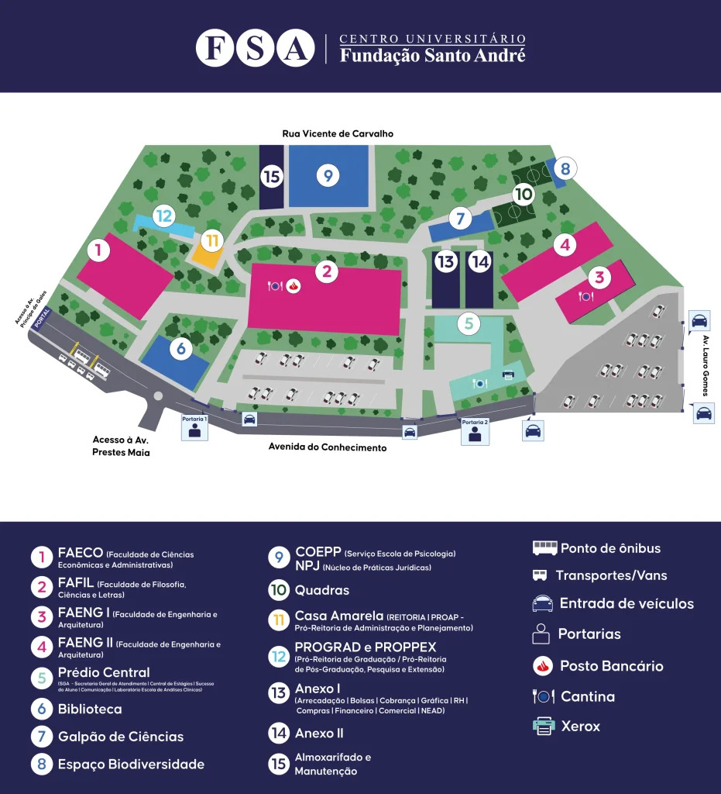

ESSES DADOS SÃO FICCIONAIS, AINDA NÃO REFLETEM A REALIDADE FIEL DO AMBIENTE
Locais para coleta de recicláveis
Pelo menos 3 na Fafil
- 1 ao lado esquerdo da saída, sentido FAECO
- 1 ao lado dos banheiros no 1ºA. (Lado Leste)
- 1 perto a entradam sentido Faengs, Térreo
Pelo menos 5 no Prédio central
- 1 ao lado de fora da cantina, frente a praça
- 1 ao lado de dentro ao lado das portas
- 1 perto a secretaria ao lado da mesa de ping pong
- 1 perto aos banheiros no terreo na rampoa sentido a refeitório
- 1 perto aos banheiros no terreo na rampoa sentido a refeitório
